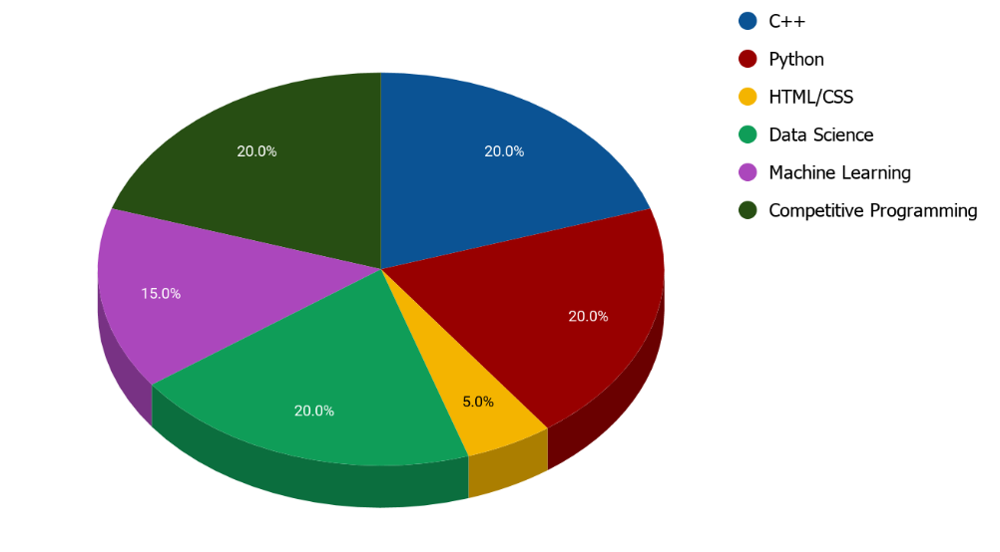
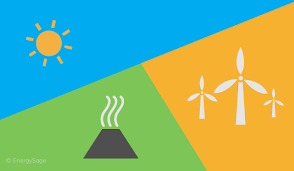
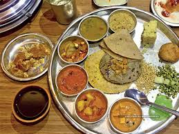

QR No. - E/1,Jail Colony, District Jail
Keonjhargarh,Odisha,India, 758001
(+91) 700-xxxxxxx
About me
"Don’t wait for the right opportunity, just create it"
I have the attitude of a learner,
the courage of an entrepreneur and the thinking of an optimist,
engraved inside me. I wish to be a leader among my community of people.
My interest lies in writing both technical/non-
technical blogs and teaching people with some skills. I am a hardcore programmer, a Machine Learning enthusiast
and an Opensource contributor.My hobbies include Graphic Designing, Reading Novels,Journals and listening to music.
From an engineering perspective, I have chosen "Data Science and Machine Learning"
as my specialization fields.
Experience
Technical Internships & Positions Held
Chapter Leader
GirlScript Foundation, Bilaspur Chapter
June 2020 - present || Bilaspur
Publicize:- Spread awareness about Girlscript events and program in my region
Ideate:- Strategize and drive innovative word of mouth campaigns in our activities
and events
Promote:- Ensuring enthusiastic participation from my region
Organize:- Planning and organizing events in my community
Represent:-Acting as a representative for Girlscript for promoting the
festival in my circles
Fellow
Incubate IND
July 2020 - present || PART TIME
INCIND Technology Fellowship is a unique and exclusive program for the
coders, hackers, designers and innovators of tomorrow. As part of this
fellowship, you will get an opportunity to develop your skills by
working with senior technology leaders and industry experts.
Mission Advocate
Widhya
June 2020 - present || PART TIME
Creating content for Missions
Creating communities and helping us reach out to more students
Participate in the decision making processes along with Team Widhya
Algorithms and Data Structure Developer Intern
OpenGenus Foundation
June 2020 - present || Remote Internship
Open-Source contribution in the existing project codes
Writing technical articles
Data Analytics and Research Intern
Wealthy Waste
May 2020 - June 2020 || Remote Internship
Analysed the provided data (Exploratory Data Analysis)
Correlated the data with real life incidents, by using Statistical Analysis
Prepared a research output based on the findings
Technical Content Writer Intern
Geeks For Geeks
May 2020 - present || Remote Internship
Writing innovative technical articles
Editing and improving the code and content of the existing article
Marketing Volunteer & Campus Ambassador
Campus Hustler
Skillenza
Representing the company in my campus by working as a bridge between them
Helping the company in social media marketing of their product and events
Actively taking part in the technical and non-technical events organised
by the company, like hackathons,webinars etc
Campus Ambassador
Cipher Schools
Helping students from my college in actively taking part in technology related programs
Helping the company in social media marketing of their product and events
Representing the company in my campus
Student Partner(ISP-18)
Internshala
Representing the company in my campus and help students in finding internships
Actively taking part in the technical and non-technical events
organised by the company, like hackathons,webinars etc
Summer Training
Summer Trainee
EICT, IIT,Roorkee
This was a paid training program conducted by EICT(Electronics and ICT Academy),
IIT Roorkee on CloudxLab platform. I am doing the training on "Python for Machine Learning"
and "Machine Learning" domain.This training consisted of around 8 machine learning projects
and the required theory.
Online Training
Tata Steel
I have completed the industrial training on Machine Learning, under
the “Capability Development” program by Tata Steel.
Workshop & Conference Experience
Machine Learning Workshop
NIT Rourkela || Nov-2019 || Participant
This workshop was conducted during INNOVISION-2019 at NIT, Rourkela
by Google DSC and Explore ML program. A very firm introduction to ML
algorithms and Neural Network was provided during the workshop.
Cloud Computing Workshop
NIT Rourkela || Nov-2019 || Participant
This workshop was conducted during INNOVISION-2019 at NIT, Rourkela
in association with Bennett University. I got a basic overview of GCP
and AWS platforms and the cloud infrastructure. A hands-on session was
conducted on ‘QWIKLABS’.
This workshop was conducted during EQUILIBRIO-2020 at ITGGU,Bilaspur
in association with Robosapiens India Pvt. Limited . I have prepared
a ‘Line Follower Bot’ and a ‘Maze Runner (Bluetooth Controlled)’.
Also I won the contest conducted during the workshop.
Cybernate Workshop
ITGGU Bilaspur || Jan-2020 || Instructor
This workshop was conducted during EQUILIBRIO-2020 at ITGGU,Bilaspur
.I was the instructor for C/C++ Programming and it's use in problem
solving on "Codechef".
Cloud Community Days
KonfHub || June-2020 || Participant
This international conference was conducted for three days where many speakers from the industry
guided the participants on Cloud Computing, AI/ML and DevOps respectively.
International Summit on Datascience and AI
RBCDSAI, IIT Madras || June-2020 || Participant
This international was conducted by IIT Madras, which was three days long. Speakers, Engineers and Researchers
all around the world were present in the summit with there research papers and projects. This summit mainly focused
on AI and it's applications in different fields.
Participated Webinars
Going Crazy With Flutter - GDG, Coimbatore — April,2020
Demystify Computer Vision With TensorFlow - TFUG, Coimbatore — April,2020
Decision Trees And Random Forest - School Of AI, Coimbatore — April,2020
The Art of Clean Code - GDG Coimbatore — April,2020
Getting Started in UI/UX - MSP (Microsoft Student Partner) — April,2020
Webinar on Software Development and CP - MSP (Microsoft Student Partner) — April,2020
Robot Operation and - AKGEC Skills Foundation — April,2020
Robotics Process Automation (RPA) - GUVI,IITM — May,2020
Application Development Using Flutter - HoncHous — May,2020
Industrial Project Experience
The Uplift Project
GirlScript
June 2020 - PRESENT | PROJECT
I have chosen the “Data Structures and Algorithms” track, my work includes
participating in the project tasks in guidance of a mentor and performing
technical works.
SCI - 2020
Student Code In
June 2020 - PRESENT | OPEN SOURCE CONTRIBUTION
I got selected as a participant and a contributor for the open source development Contests
by Student Code In.
Skills
Primary Skills:

Secondary Skills (Beginner/Currently Learning):
Databases - MySQL, PostGresSQL,SQLite Server Version Control - Command Line, Git, Github Robotics - Arduino, AVR, Bluetooth Module, LDR & IR Sensors, Distance Sensor Cloud Services - AWS, GCP Android Development - Android Studio SDK tools, Flutter SDK and Dart Software Development - Algorithms and Design
Education
Guru Ghasidas Vishwavidyalaya, Bilaspur
B.Tech,Computer Science and Engineering
2019-2023(Expected)
Activities and Societies
Senior Executive, CODESENSE Event, Equilibrio - 2020 - Successfully conducted a
coding event on “Codechef” platform by setting questions, test cases and editorials.
Got 150 Codechef Laddus as reward of the successful conduction.
Junior Executive, Office and Finance core team, Equilibrio - 2020 - Designed
contents for the events, handled official matters and maintained some data on
techfest participants and other team members.
Associate, MODEL-EXHIBITION Event, Equilibrio - 2020 - Conducted an innovative
event where students from schools and colleges participated with their innovative
prototypes and posters.
Administrator and Co - Instructor - Coding Club - Teaching
people about programming and conducted various meetups and events related to it.
Awards
Prize money of 2500/-, CODEBID event, Equilibrio - 2020
Workshop Winner - Certificate Of Excellence in Robot Making using AVR
Extra-curricular
Content Writer and Designer - Worked as a content writer for
many events in my college
Graphic Designer - Taken freelancing projects and designed
posters/logo for many organisation
B.J.B. Junior College, Bhubaneswar
Intermediate Of Science,PCM + Statistics
2015 - 2017,First Class (79.67 %)
Awards
Skill Development for Youth Program Award, for securing first class.
Topper of Statistics in state, by scoring 92/100.
Saraswati Shishu Vidya Mandir, Sundergarh
Secondary School Education
2007 - 2015,Topper Of District (92.67%)
Activities and Societies
Model Exhibition -Participated in many school and state
level competitions.
Winner of many Debate Competitions, Quizzes, Essay Writing in both
district and school levels
Certificate of Participation and Appreciation -from Odia Sahitya
Academy (Literature Society) - For participating in State Level
competitions and activities.
Student Council - Head Of the council, for two consecutive
years.
Awards
INSPIRE Scholarship cum Award - Department Of Science and Technology,
Government Of India,in 2011, - participated in SLEPC and DLEPC, won
DLEPC and represented my school in State Level Exhibition and Project
competition.
Topper Of District - I topped the Matriculation Examination
amongst the students in my district, got a certificate of appreciation
from the District Collector.
Certificate of Participation and Appreciation -from Odia Sahitya
Academy (Literature Society) - For participating in State Level
competitions and activities.
Certificate of Appreciation - from “The Sambad” newspaper and
“Ama Odia” association, - for becoming the best student in 2015.
Projects
GITHUB Repositories:
TREASURE CODE ALGORITHM
An open sourced repository containing DSA applications and
Implementations in C++. This is a long term project focused on
creating a storage of DSA codes in different programming languages.
(Model Name - SP2901A) - Using Arduino Microcontroller and HC-05 bluetooth module.
BLUETOOTH BOT-2
(Model Name - SP2901B) - Using AVR microcontroller and DTMF module.
Android Development (Ongoing):
BASIC ANDROID APPLICATION
Working on ‘I am rich’, ‘photo-collage’, ‘Movie Recommendation’ and
‘Bill-Splitting App’
Competitive Programming Summary
CODECHEF
Participated Contests- 3+1
Highest Rating - 1493 (2 star)
Problems solved - 50+
HACKEREARTH
Participated Contests- 5
Highest Rating - 1388
Problems solved - 50+
HACKERRANK
Participated Contests- 1
Problems solved - 100+
Publications
Total Number Of Published Digital Articles - 11 (Including Articles
published on GeeksForGeeks, Medium.com, Quora.com)
Total Number Of Research Publications - 2 (Both Ongoing)

RENEWABLE SOURCE OF ENERGY
(Ongoing)
An AI powered system, that relates IOT and Electronics for it’s
working, based on SeeBeck Effect. (My article was published on i4C Blogathon
and got the consolation prize)

CUISINE TASTE PREDICTION
(Ongoing)
A model that can differentiate between the cuisines based on
their taste and customer’s taste bud,using Computer Vision and
AI.
Volunteering Experience
Community Immunity Ambassador, MBRU,Dubai - Creating awareness in my society and
surrounding for the fight against COVID-19
Member, IAENG,Hongkong - I am a member at International Association Of Engineers,
participating in international journals and newsletters for technical updates.
Contributing Writer, Quora.com - I am having a Quora Space named "Sarcastic Setter",
which guides people for competitive programming.Also, I am a regular contributor
for "The Tech Club" space on quora.
Contributor, Google Crowd-source
Member, GDG Coimbatore
Publisher and Content Writer, Medium.com - I have a publication named “Machine Learning Kickstart”
on Medium.com, that publishes posts and articles on Machine Learning.